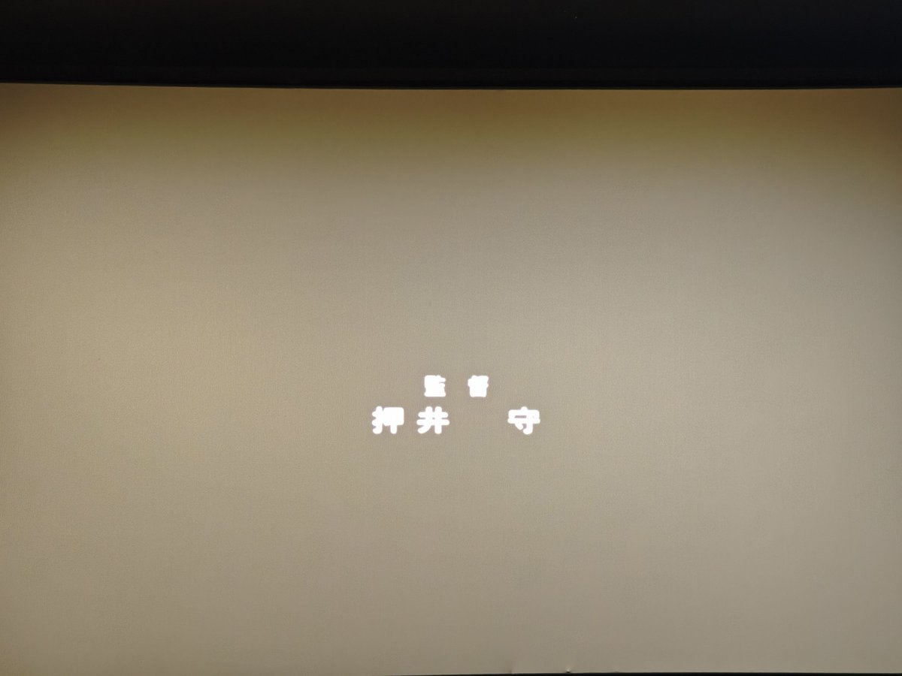

什么算是人这个问题可展开的地方比较多——一个如果身体全都换成了赛博义体，就像忒修斯之船一样，那人还是自己吗？一个从代码和网络之中诞生的有自主意识的“生命体”是真正的人吗？我猜想女主决定融合可能是意识到自己在人的方面的某些缺失，于是选择帮助病毒繁衍而获得某种完整，或许就是为了寻找灵魂。


甲鱼不正经影评20
《攻壳机动队》
亲友锐评：“一看就感觉是很经典的赛博朋克里什么算是人系。”
虽然她没有看过但是确实点出了主旨。说实话刚看完没怎么看懂，只是有种模糊的感觉。最后一段的大决战似乎存在一些宗教隐喻——疑似教堂的地点、有关人的生命之树、飞机像天使一样的剪影。 https://t.co/to72zUC7ps
《攻壳机动队》
亲友锐评：“一看就感觉是很经典的赛博朋克里什么算是人系。”
虽然她没有看过但是确实点出了主旨。说实话刚看完没怎么看懂，只是有种模糊的感觉。最后一段的大决战似乎存在一些宗教隐喻——疑似教堂的地点、有关人的生命之树、飞机像天使一样的剪影。 https://t.co/to72zUC7ps